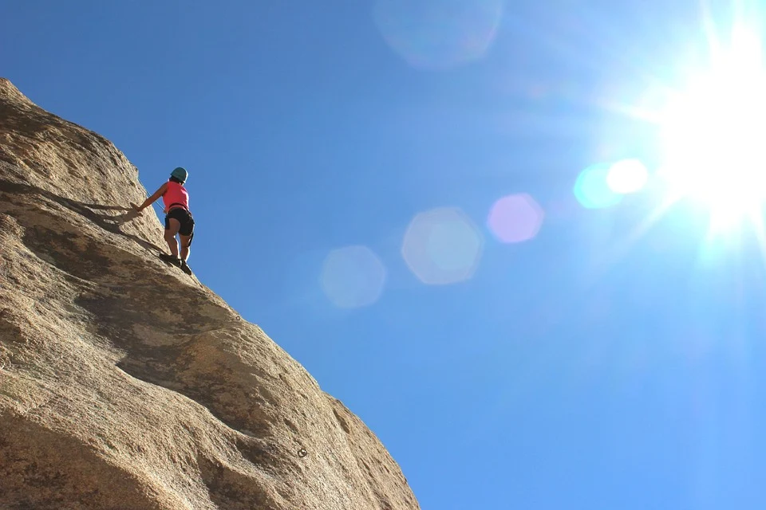

COMMUNICATION
学生時代や社会に出てから学んだ上下関係を大切にしながら周りの人と
上手くコミュニケーションを取ることができます。
また学生時代には学級委員長や部活動のキャプテンを務めていたことも
あるため、広い視野で周りを見ながら物事を進めることができます。
CHALLENGE
チャレンジすることは自己のレベルアップに繋がるため、
挑戦し続ける人生にしたいと考えております。
業界未経験ですが、日々の業務でも色々なことに挑戦して、
何事にも積極的に取り組んで参ります。

EFFORT
目標達成にに向かって努力をし、毎日コツコツ積み重ねることが得意です。
プログラミングの知識が全くないところから独学でこのポートフォリオを完成させました。
まだまだ勉強することは山ほどあると思いますがこれからも
一人前のプログラマーになれるよう精進して参ります。